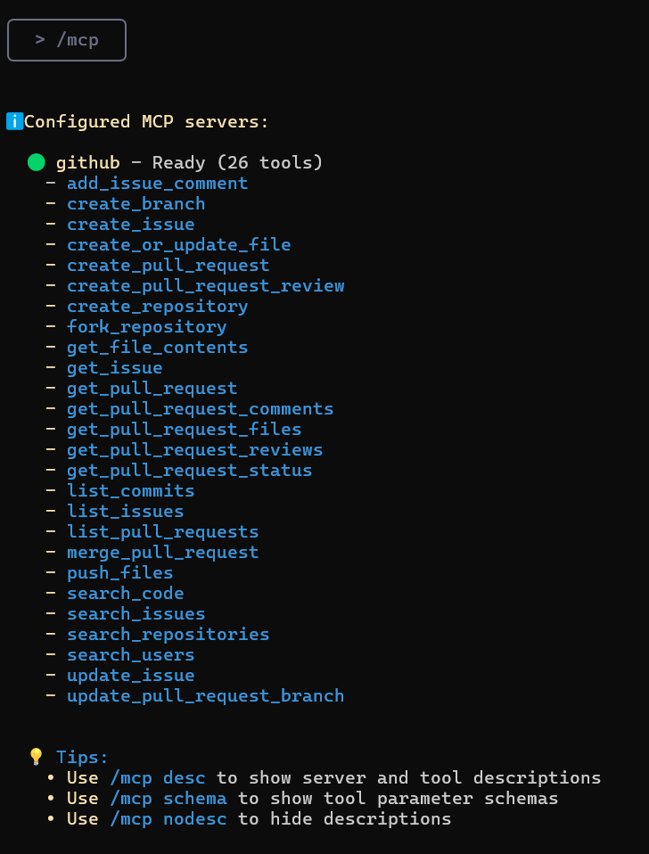

Gemini CLI es una herramienta que funciona directamente en tu terminal, comprende tu base de código y te ayuda a corregir errores con consultas en lenguaje natural. Es la respuesta de Google a Claude Code de Anthropic. Puedes usar Gemini 1.5 Pro (cuando alcances el límite, la herramienta cambiará a Gemini 1.5 Flash) y su ventana de contexto de 1 millón de tokens para realizar hasta 60 solicitudes por minuto y 1000 solicitudes por día, todo de forma gratuita.
pytestgit, npm, pip y otros, lo que te permite administrar proyectos sin salir de la CLI.Para empezar, instala Node.js (versión 18 o superior). Puedes descargar el instalador de tu elección o ejecutar los siguientes comandos bash en tu terminal:
# Download and install nvm (Node Version Manager):
curl -o- https://raw.githubusercontent.com/nvm-sh/nvm/v0.40.3/install.sh | bash
# Initialize nvm in the current terminal session
. "$HOME/.nvm/nvm.sh"
# Download and install Node.js (e.g., version 22):
nvm install 22
# Check Node.js version:
node -v # Should display "v22.17.0" or similar
# Check npm version:
npm -v # Should display "10.9.2" or similar
⚠️ Importante para usuarios de Windows: El comando
nvmanterior es para Linux/macOS y no funcionará en PowerShell o cmd.exe. Para Windows, usa nvm-windows descargandonvm-setup.exede la sección Releases. Alternativamente, puedes instalar WSL (Subsistema de Windows para Linux) y ejecutar los comandos en Ubuntu u otra distribución de Linux.
Una vez que Node.js y npm estén instalados y verificados, instala Gemini CLI ejecutando el siguiente comando en tu terminal:
npx https://github.com/google-gemini/gemini-cli
O usa npm para instalarlo globalmente:
npm install -g @google/gemini-cli
gemini
Después de la instalación, escribe gemini en la terminal para acceder a la herramienta.
Puedes usar tu cuenta personal de Google para autenticarte. Esto te dará hasta 60 solicitudes por minuto y 1000 solicitudes por día al usar Gemini.
En esta guía, usé Iniciar sesión con Google, pero también puedes usar una clave API (establecida como variable de entorno o en un archivo .env) o autenticarte a través de Vertex AI.
Para generar una nueva clave API, inicia sesión en AI Studio con tu cuenta de Google y haz clic en "Crear clave API".
# Set the key as an environment variable
export GEMINI_API_KEY="Your_API_Key"
# Or create a .env file
GEMINI_API_KEY="Your_API_Key"
Puedes usar el comando /auth en el cuadro de texto para cambiar los métodos de autenticación según sea necesario.

Una vez que la CLI esté en funcionamiento, podemos comenzar a interactuar con Gemini desde la terminal. Hay dos formas de trabajar con un proyecto.
Para iniciar un proyecto desde cero, ejecuta los siguientes comandos:
cd new-project/
gemini
Dentro de la CLI, usa un prompt para resolver el problema que te interese, por ejemplo:
Escribe el código del codificador para un transformador desde cero.

Da permiso para escribir archivos:

Si ya tienes una base de código, puedes trabajar con ella ejecutando los siguientes comandos:
git clone https://github.com/AashiDutt/Google-Agent-Development-Kit-Demo
cd Google-Agent-Development-Kit-Demo
gemini
Dentro de la CLI, usa un prompt, por ejemplo:
Proporcióname un resumen de todos los cambios realizados en la base de código en el último mes.
Como ejemplo, usaré el proyecto Planificador de viajes basado en ADK. Con Gemini CLI, te mostraré cómo:
Comencemos pidiéndole a Gemini que explore y explique la base de código.
Prompt: Explora el directorio actual y describe la arquitectura del proyecto.
Gemini CLI devolverá un resumen estructurado explicando la arquitectura:
travel_ui.py) proporciona una interfaz para la interacción.host_agent actúa como un coordinador central.flight_agent, stay_agent, activities_agent para buscar vuelos, hoteles y entretenimiento.shared/schemas.py define estructuras de datos comunes.Esto te ayudará a orientarte sin leer cada archivo manualmente.
Exploremos algunos problemas abiertos del repositorio de GitHub.
Prompt: Aquí hay un problema de GitHub: [@search https://github.com/AashiDutt/Google-Agent-Development-Kit-Demo/issues/1]. Analiza la base de código y propón un plan de corrección de 3 pasos. ¿Qué archivos/funciones deben cambiarse?
Gemini CLI investigó el problema:
@search, recuperó datos de GitHub.create_session() no se llamó con await).A continuación, la CLI espera la entrada del usuario para evaluar los cambios. Si el usuario está de acuerdo, aplicará los cambios sugeridos.
Ahora implementemos y probemos las correcciones sugeridas por Gemini.
Prompt: Escribe una prueba unitaria para este cambio en pytest en el archivo test_shared.py.
Gemini CLI:
json.dumps() antes de enviar la carga útil de la tarea.test_agents.py para agregar pruebas unitarias.Ahora que se han realizado las correcciones, resumamos los cambios y escribámoslos en Markdown en un archivo .txt.
Prompt: Escribe un resumen markdown del error, la corrección y la cobertura de las pruebas. Formatea esto como una entrada de registro de cambios bajo la versión "v0.2.0".
Luego, para guardar el resumen en un documento, usé el siguiente prompt:
Prompt: Guarda este resumen en un archivo .txt y nómbralo summary.txt
Gemini CLI usa la herramienta WriteFile para guardar el archivo summary.txt en el directorio del proyecto.
Esta sección amplía los experimentos anteriores donde exploro cómo Gemini CLI usa el Protocolo de contexto del modelo (MCP) para mantener resúmenes a nivel de archivo e historial de tareas entre prompts. Esto le da a Gemini una "memoria de trabajo" dentro de una sesión.
Prompt: Genera un diagrama de flujo que muestre cómo los agentes se comunican a través de A2A (agente a agente) y cómo main.py gestiona el sistema. Resalta dónde ocurrió el problema y cómo se solucionó.
Esta visualización fue posible gracias a la memoria persistente de Gemini, que retuvo el contexto completo de nuestra corrección de errores anterior y la estructura del agente sin tener que recargar los archivos.
Al llamar al comando /tools en Gemini CLI, se mostrará una lista de herramientas disponibles que se pueden usar para realizar varias tareas, como editar código, generar pruebas, crear documentación y mucho más.

ReadFolder (ls)
Lista archivos y carpetas en un directorio, análogo al comando ls en la línea de comandos.
ReadFile (read-file) Lee el contenido completo de un solo archivo, lo cual es útil para crear resúmenes o análisis.
ReadManyFiles (read-many-files)
Lee varios archivos a la vez, generalmente por un patrón (por ejemplo, todos los archivos .js).
FindFiles (glob)
Busca archivos por un patrón (por ejemplo, encontrar todos los archivos config.json en tu proyecto).
SearchText (grep)
Busca texto dentro de los archivos, por ejemplo, para encontrar todos los comentarios TODO.
Edit (edit)
Aplica cambios de código usando un diff. Gemini muestra una vista previa de las ediciones y solicita confirmación antes de aplicarlas.
WriteFile (write-file)
Crea nuevos archivos (por ejemplo, README.md) con el contenido proporcionado por el usuario.
Shell (shell)
Ejecuta comandos directamente en la terminal si los prefijas con ! (por ejemplo, !npm test).
WebFetch (web-fetch) Descarga contenido de la web (HTML o JSON), lo que permite a Gemini analizar datos externos.
GoogleSearch (web-search) Realiza una búsqueda en Google para basar las respuestas en información real (por ejemplo, para encontrar una explicación para un error).
Save Memory (memoryTool) Guarda hechos o preferencias durante una sesión (por ejemplo, "prefiero async/await") para mejorar la coherencia y coherencia de las respuestas.
Puedes añadir instrucciones especiales para la IA para un proyecto específico
creando un archivo GEMINI.md en el directorio raíz de tu proyecto.
Dentro de este archivo, puedes definir las reglas del proyecto,
los estilos de código y las herramientas que el agente debe usar. Esto asegura que el código generado cumpla con los estándares de tu proyecto.
Ejemplo de una instrucción del sistema
Para la mayoría de las tareas diarias, las herramientas integradas serán suficientes. Pero, ¿qué pasa si quieres que Gemini CLI haga algo muy especializado, como interactuar con API específicas o usar un modelo especializado (por ejemplo, un generador de imágenes o una herramienta de análisis de seguridad)? Aquí es donde entra en juego el MCP (Protocolo de contexto del modelo).
En esencia, MCP es un estándar abierto que permite a los desarrolladores añadir nuevas herramientas y capacidades a la IA ejecutando un servidor con el que la CLI puede interactuar. En Gemini CLI, puedes configurar "servidores MCP" en un archivo de configuración JSON, y la CLI los tratará como herramientas adicionales que puede usar.
Como ejemplo, te mostraré cómo configurar un servidor MCP para GitHub en Gemini CLI.
Dentro de la carpeta de tu proyecto, crea una carpeta con el comando:
mkdir -p .gemini && touch .gemini/settings.json
Rellena el archivo con este código:
{
"mcpServers": {
"github": {
"command": "npx",
"args": ["-y", "@modelcontextprotocol/server-github"],
"env": { "GITHUB_PERSONAL_ACCESS_TOKEN": "[YOUR-TOKEN]" }
}
}
}
instrucciones sobre cómo obtener un token
Después de eso, escribe /quit en Gemini CLI para salir, y luego ábrelo de nuevo.
Verás que el servidor MCP de GitHub está en funcionamiento y listo para usar.
 Introduce el comando
Introduce el comando /mcp, y verás una lista de herramientas de GitHub.
